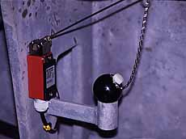
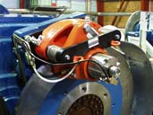

Photograph
© 1998 Soren Krohn
Wind Turbine Safety

 The components
of a wind turbine are designed to last 20 years. This means that
they will have to endure more than 120,000 operating hours, often
under stormy weather conditions.
The components
of a wind turbine are designed to last 20 years. This means that
they will have to endure more than 120,000 operating hours, often
under stormy weather conditions.
 If you compare with an ordinary automobile
engine, it usually only operates only some 5,000 hours during
its lifetime. Large wind turbines are equipped with a number
of safety devices to ensure safe operation during their lifetime.
If you compare with an ordinary automobile
engine, it usually only operates only some 5,000 hours during
its lifetime. Large wind turbines are equipped with a number
of safety devices to ensure safe operation during their lifetime.
Sensors
One of the classical, and most simple safety devices in a wind
turbine is the vibration sensor in the image above, which
was first installed in the Gedser
wind turbine. It simply consists of a ball resting on a ring.
The ball is connected to a switch through a chain. If the turbine
starts shaking, the ball will fall off the ring and switch the
turbine off.
 There are many other sensors in the nacelle,
e.g. electronic thermometers which check the oil temperature
in the gearbox and the temperature of the generator.
There are many other sensors in the nacelle,
e.g. electronic thermometers which check the oil temperature
in the gearbox and the temperature of the generator.
Rotor
Blades
Safety regulations for wind turbines vary between countries.
Denmark is the only country in which the law requires that all
new rotor blades are tested both
statically, i.e. applying weights to bend the blade, and
dynamically, i.e. testing the blade's ability to withstand
fatigue from repeated bending more than five million times. You
may read more about this on the page on Testing
Wind Turbine Rotor Blades.
Overspeed
Protection
It is essential that wind turbines stop automatically in case
of malfunction of a critical component. E.g. if the generator
overheats or is disconnected from the electrical grid it will
stop braking the rotation of the rotor, and the rotor will start
accelerating rapidly within a matter of seconds.
 In such a case it is essential to have an
overspeed protection system. Danish wind turbines are requited
by law to have two independent fail safe brake mechanisms
to stop the turbine.
In such a case it is essential to have an
overspeed protection system. Danish wind turbines are requited
by law to have two independent fail safe brake mechanisms
to stop the turbine.
Aerodynamic
Braking System: Tip Brakes
The primary braking system for most modern wind turbines is the
aerodynamic braking system, which essentially consists
in turning the rotor blades about 90 degrees along their longitudinal
axis (in the case of a pitch controlled
turbine or an active stall
controlled turbine), or in turning the rotor blade tips
90 degrees (in the case of a stall controlled
turbine).
 These systems are usually spring operated,
in order to work even in case of electrical power failure, and
they are automatically activated if the hydraulic system in the
turbine loses pressure. The hydraulic system in the turbine is
used turn the blades or blade tips back in place once the dangerous
situation is over.
These systems are usually spring operated,
in order to work even in case of electrical power failure, and
they are automatically activated if the hydraulic system in the
turbine loses pressure. The hydraulic system in the turbine is
used turn the blades or blade tips back in place once the dangerous
situation is over.
 Experience has proved that aerodynamic braking
systems are extremely safe.
Experience has proved that aerodynamic braking
systems are extremely safe.
 They will stop the turbine in a matter of
a couple of rotations, at the most. In addition, they offer a
very gentle way of braking the turbine without any major stress,
tear and wear on the tower and the machinery.
They will stop the turbine in a matter of
a couple of rotations, at the most. In addition, they offer a
very gentle way of braking the turbine without any major stress,
tear and wear on the tower and the machinery.
 The normal way of stopping a modern turbine
(for any reason) is therefore to use the aerodynamic braking
system.
The normal way of stopping a modern turbine
(for any reason) is therefore to use the aerodynamic braking
system.
Mechanical
Braking System
 The
mechanical brake is used as a backup system for the aerodynamic
braking system, and as a parking brake, once the turbine is stopped
in the case of a stall controlled turbine.
The
mechanical brake is used as a backup system for the aerodynamic
braking system, and as a parking brake, once the turbine is stopped
in the case of a stall controlled turbine.
 Pitch controlled turbines rarely need to
activate the mechanical brake (except for maintenance work),
as the rotor cannot move very much once the rotor blades are
pitched 90 degrees.
Pitch controlled turbines rarely need to
activate the mechanical brake (except for maintenance work),
as the rotor cannot move very much once the rotor blades are
pitched 90 degrees.
© Copyright 1999 Soren Krohn. All rights reserved.
Updated 15 December 2000
http://www.windpower.org/tour/wtrb/safety.htm